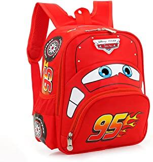
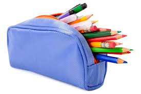
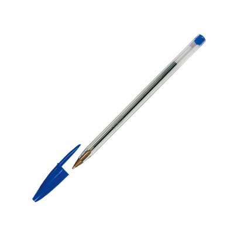
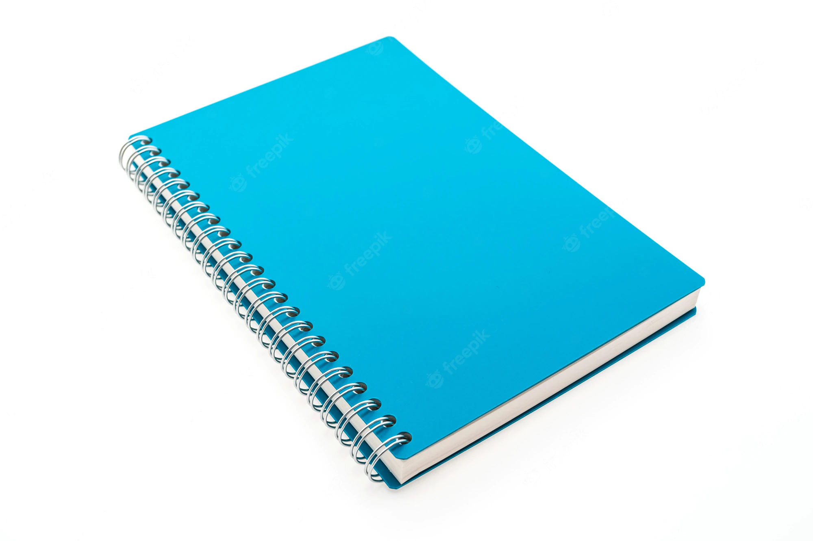

-
Mochila

- Una mochila es un recipiente para llevar el equipaje, por lo general sujeto a la espalda por medio de correas o bandas que pasan por los hombros y se atan a la cintura.
-
Estuche

- Un estuche es una caja o envoltura pequeña que sirve para guardar cosas de forma ordenada.
-
Bolígrafo

- Un bolígrafo es un instrumento de escritura
-
Cuaderno

- Un cuaderno es un conjunto de hojas de papel,
impresas o en blanco, unidas con una espiral o dobladas, encajadas o cosidas, que forman un libro delgado.
Volver